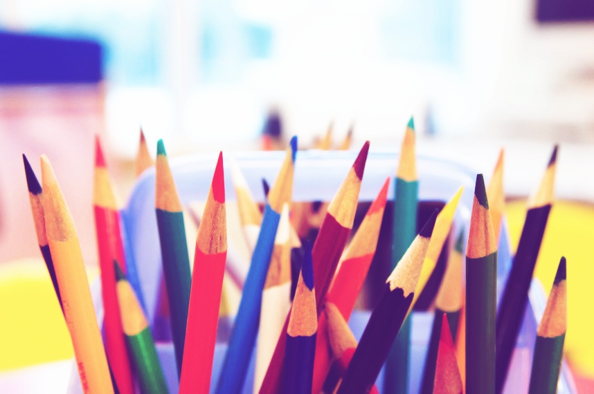
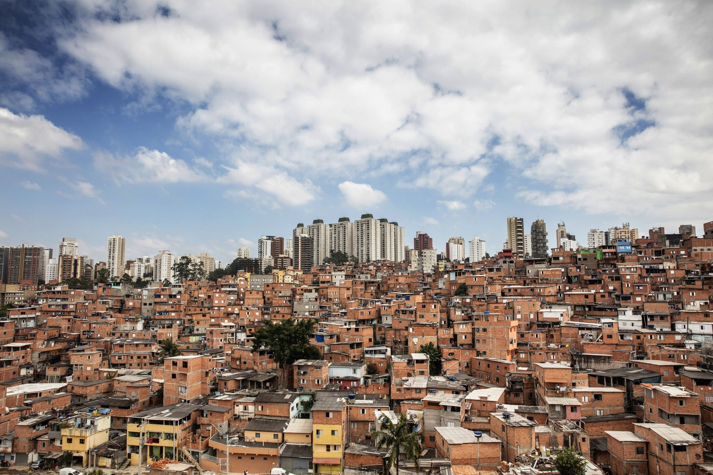
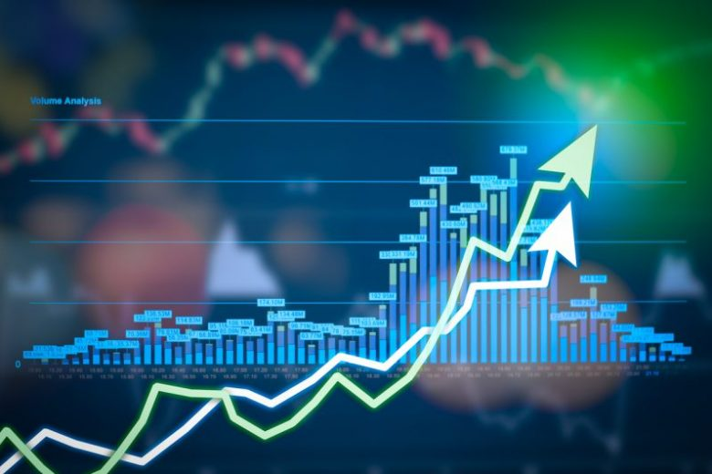
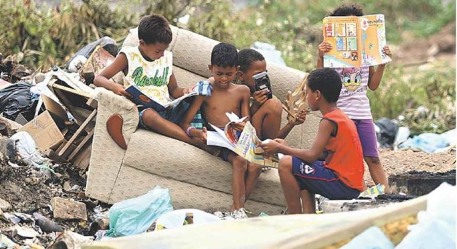

São muitos os problemas que estão presentes na educação brasileira, especialmente na educação pública. São diversos os fatores que proporcionam resultados negativos, um exemplo disso são as crianças que se encontram no 6ºano do ensino fundamental e não dominam habilidade de ler e escrever.
Esse fato é resultado direto do que acontece na estrutura educacional brasileira, pois praticamente todos os que atuam na educação recebem baixos salários, professores frustrados que não exercem com profissionalismo ou também esbarram nas dificuldades diárias da realidade escolar, além dos pais que não participam na educação dos filhos, entre muitos outros agravantes.
As avaliações implantadas pelo governo para avaliar a educação brasileira apresentam números desanimadores, isso se tornou uma situação insustentável que não pode continuar.
A periferia das metrópoles, sem segurança e, por vezes, dominada pelo narcotráfico, não favorece o estudo. A pobreza obriga uma menina a cuidar dos irmãos, a gravidez na adolescência é comum, a falta de transporte desestimula. Uma herança perversa faz com que 63% das crianças e adolescentes de 4 a 17 anos fora da escola no Brasil seja afrodescendente. Após a abolição, escravos libertos seguiram afastados dos direitos básicos e hoje 70,8% da população extremamente pobre é negra ou parda. Desenha-se aí outro dilema: como exigir que os pais das crianças excluídas lutem por seus direitos se muitos deles também não tiveram acesso à escola? Como se valer das políticas públicas se até a leitura de um documento é difícil? Esse ciclo perpetua o analfabetismo e a desinformação.
Fonte: Estadão.
Há diversas formas de se medir o impacto da Educação na economia. Um País mais educado gasta menos com saúde pública, tem níveis de segurança mais elevados, já que apresenta criminalidade mais baixa. Maior escolaridade faz com que, direta ou indiretamente, uma economia funcione com mais eficiência.
A baixa qualidade da Educação significa que reforçamos as desigualdades. No Brasil, as pessoas que nascem em famílias mais pobres não têm a chance de conseguir uma renda melhor do que a de seus pais. Permitir que elas concorram em igualdade de oportunidades com aquelas que tiveram a sorte de nascer em uma família rica é um grande instrumento de redução de desigualdade. Se não há uma Educação pública que garanta a chance de as pessoas mais pobres aumentarem a renda ao longo das gerações, a desigualdade acaba sendo reforçada.
O que podemos observar com os fatos aqui reunidos é:
Nosso país tem uma tradição histórica de utilizar as classes menos favorecidas como ferramentas descartáveis. Sem muitos recursos como educação de qualidade, segurança, saneamento, transporte público e etc, muitas famílias lidam da maneira mais difícil com a divisão de classes. A falta de acesso e de inclusão proporciona um ambiente onde a marginalidade soa mais viável do que o estudo para muitos jovens, consequentemente o Brasil é um dos países mais violentos com grande número de homicidios comparavel a países que estão em guerra. A educação é o berço da ética, onde aprendemos valores humanos e adotamos uma disciplina não corrupta o ato de deixar o ensino precário a essas classes sociais so revela que o estado prefere manter um país com poucas condições onde o pobre trabalha muito para receber menos, e o ensino superior parece um sonho distante. 